Walking strides segmentation with adept
Marta Karas
Ciprian Crainiceanu
Jacek Urbanek
2019-06-15
Source:vignettes/adept-strides-segmentation.Rmd
adept-strides-segmentation.RmdThis vignette provides an example of segmentation of walking strides (two consecutive steps) in sub-second accelerometry data with adept package. The exemplary dataset is a part of the adeptdata package. We demonstrate that ADEPT1 can be used to perform automatic and precise walking stride segmentation from data collected during a combination of running, walking and resting exercises. We introduce how to segment data:
- with the use of stride templates that were pre-computed based on data from an external study (attached to
adeptdatapackage), - by deriving new stride templates in a semi-manual manner.
See Introduction to adept package2 vignette for an introduction to the ADEPT and usage examples of the segmentPattern function which implements the ADEPT method.
Raw accelerometry data sample
The adeptdata package contains acc_running - a sample of raw accelerometry data collected during 25 minutes of an outdoor run. Data were collected at the sampling frequency of 100 Hz with two ActiGraph GT9X Link sensors located at the left hip and left ankle.
Running trial
mapmyrun mobile tracking application (link) was used during 25 minutes of running (Patterson Park area, Baltimore, MD) to collect acc_running accelerometry data set. Based on the mobile app, the distance covered is approximately 3.35 km. A ground elevation plot generated by the mobile app presents signature trial characteristics (see figure below). The timestamp in acc_running dataset matches the mobile app up to ~1-minute.
 Screenshot taken from a personal profile of mapmyrun tracking application, accessed via https://www.mapmyrun.com.
Screenshot taken from a personal profile of mapmyrun tracking application, accessed via https://www.mapmyrun.com.
Sensor and accelerometry data
Data were collected with two ActiGraph GT9X Link physical activity monitors at the sampling frequency of 100 Hz. ActiGraph GT9X Link has 3-axis accelerometer collecting accelerometry data along three orthogonal axes. At a sampling frequency of 100 Hz, we collected 100 observations per second per axis (total of 300 observations per second).
Sensor location
First sensor (denoted as “left_ankle”) was attached to the outer side of the left shoe with a slide-on clip, just below the ankle. A second sensor (denoted as “left_hip”) was attached on the left side of the elastic belt located hip (see image below). Both devices remained stable during the run-trial.

 Wearable accelerometer devices location during the experiment. The devices were still covered with a protective plastic foil.
Wearable accelerometer devices location during the experiment. The devices were still covered with a protective plastic foil.
Data set acc_running
To access the acc_running data, load adeptdata package.
# devtools::install_github("martakarass/adept")
library(adept)
library(adeptdata)
library(lubridate)
options(digits.secs = 2)
head(acc_running)
#> loc_id date_time x y z
#> 1 left_hip 2018-10-25 17:57:30.00 -0.199 -1.012 0.133
#> 2 left_hip 2018-10-25 17:57:30.00 -0.191 -1.027 0.133
#> 3 left_hip 2018-10-25 17:57:30.01 -0.191 -1.035 0.121
#> 4 left_hip 2018-10-25 17:57:30.02 -0.191 -1.027 0.109
#> 5 left_hip 2018-10-25 17:57:30.03 -0.191 -1.016 0.109
#> 6 left_hip 2018-10-25 17:57:30.04 -0.184 -1.012 0.121
tz(acc_running$date_time)
#> [1] "UTC"acc_running consists of 300,000 observations of 5 variables:
-
loc_id- sensor location label, one of:"left_hip","left_ankle", -
date_time- timestamp, stored asPOSIXct, -
x- accelerometry time-series collected on the \(x\)-axis of the sensor, -
y- accelerometry time-series collected on the \(y\)-axis of the sensor, -
x- accelerometry time-series collected on the \(z\)-axis of the sensor.
Note on date_time column values
- Values in the
date_timecolumn were generated viaseq(from = as.POSIXct("2018-10-25 17:57:30.00", tz = "UTC"), by = 0.01, length.out = 150000)and its display exhibits, likely, the floating point arithmetic problem (see this SO question). Notedate_timerange is not affected and spans from"2018-10-25 17:57:30.00 UTC"to"2018-10-25 18:22:29.99 UTC", inclusive.
Accelerometry data visualization
Sub-second level accelerometry data
One way to visualize raw accelerometry data is to plot it as a three-dimensional time-series \((x,y,z)\). Here, we plot data from three different time frames, each of 4 seconds length, simultaneously for data collected at left ankle and left hip.
library(lubridate)
library(dplyr)
library(ggplot2)
library(reshape2)
library(gridExtra)
library(magrittr)
## Define time frame start values for data subset
t1 <- ymd_hms("2018-10-25 18:07:00", tz = "UTC")
t2 <- ymd_hms("2018-10-25 18:20:30", tz = "UTC")
t3 <- ymd_hms("2018-10-25 18:22:00", tz = "UTC")
## Mutate data: generate vector magnitude variable
acc_running %<>% mutate(vm = sqrt(x^2 + y^2 + z^2))
## Subset data
acc_running_sub <-
acc_running %>%
filter((date_time >= t1 & date_time < t1 + as.period(4, "seconds")) |
(date_time >= t2 & date_time < t2 + as.period(4, "seconds")) |
(date_time >= t3 & date_time < t3 + as.period(4, "seconds")) )
## Plot (x,y,z) values
acc_running_sub %>%
select(-vm) %>%
melt(id.vars = c("date_time", "loc_id")) %>%
mutate(dt_floor = paste0("time frame start: ",
floor_date(date_time, unit = "minutes"))) %>%
ggplot(aes(x = date_time, y = value, color = variable)) +
geom_line(size = 0.5) +
facet_grid(loc_id ~ dt_floor, scales = "free_x") +
theme_bw(base_size = 9) +
labs(x = "Time [s]", y = "Acceleration [g]", color = "Accelerometer axis of measurement: ",
title = "Raw accelerometry data (x,y,z)") +
theme(legend.position = "top")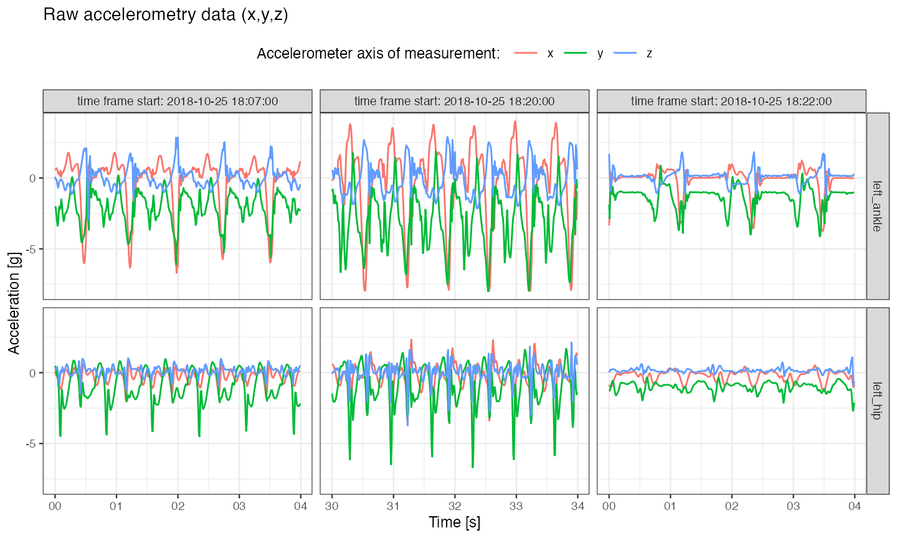
Note on sensors desynchronization
- The two sensors used in the experiment were set up to initialize data collection at the same time. However, as discussed in3, perfect synchronization on most of modern operating systems is impossible. Additionally, measurements might still get desynchronized across devices even after a few minutes of data collection. Because of that, sub-second level alignment of data cross devices cannot be expected.
Vector magnitude
Vector magnitude \((vm)\) is often used to reduce the dimensionality of accelerometry time-series \((x,y,z)\). Vector magnitude is computed as \(vm = \sqrt{x^2 + y^2 + z^2}\) at each time point resulting in 1- instead of 3-dimensional time-series.
## Plot vector magnitude values
acc_running_sub %>%
mutate(dt_floor = paste0(
"time frame start: ", floor_date(date_time, unit = "minutes"))) %>%
ggplot(aes(x = date_time, y = vm)) +
geom_line(size = 0.5) +
facet_grid(loc_id ~ dt_floor, scales = "free_x") +
theme_bw(base_size = 9) +
labs(x = "Time [s]", y = "Vector magnitue [g]",
title = "Vector magnitude (vm) summary of raw accelerometry data") 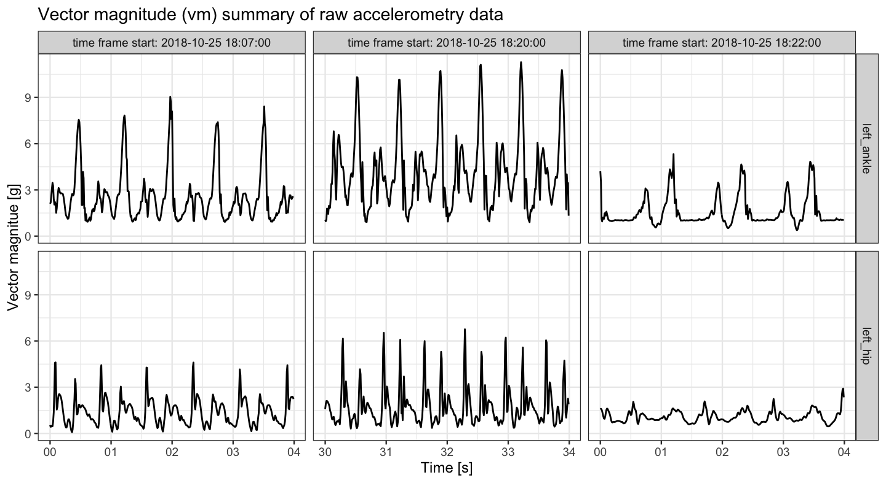
Plots of\((x,y,z)\) and \((vm)\) show an asymmetric repetitive pattern corresponding to walking strides:
- On the \((vm)\) plot, the stride beginnings and ends can be identified by amplitude peaks corresponding to left foot heel-strikes; between these peaks, there are smaller peaks, corresponding to other stride-phases (toe-strikes, toe-offs of both feet and right foot heel-strike).
There are also visible differences in amplitudes and stride durations across the three vertical plot panels:
The left vertical plot panel (
time frame start: 2018-10-25 18:07:00) corresponds to a slow/moderate pace running uphill; \((vm)\) time-series is of a relatively high magnitude.The middle vertical plot panel (
time frame start: 2018-10-25 18:20:00) corresponds to a relatively fast running. We can observe high amplitude of \((vm)\), as well as shorter stride durations.The right vertical plot panel (
time frame start: 2018-10-25 18:22:00) corresponds to walking. We can observe a relatively low \((vm)\) amplitude and longer stride durations.
Vector magnitude count
In reality, it is often challenging to make a plot of all data points collected at sampling frequency of 100 Hz even in 25 minutes-long time-series. A one way to summarize accelerometry data of such high density is to use a \((vmc)\) - vector magnitude count (also known as the mean amplitude deviation). For \(\overline{vm}(t,H)\) - average of \((vm)\) time-series over time window of length \(H\) starting at time \(t\), we define \[\mathrm { vmc } ( t, H ) = \frac { 1 } { H } \sum _ { h = 0 } ^ { H - 1 } \left| vm ( t + h ) - \overline{vm}(t,H) \right|.\]
## Function to compute vmc from a vm window vector
vmc <- function(vm.win){
mean(abs(vm.win - mean(vm.win)))
}
## Compute vmc vector in 3-seconds windows
vm <- acc_running$vm
win.vl <- 100 * 3
rn.seq <- seq(1, to = length(vm), by = win.vl)
vmc.vec <- sapply(rn.seq, function(rn.i){
vm.win.idx <- rn.i : (rn.i + win.vl - 1)
vm.win <- vm[vm.win.idx]
vmc(vm.win)
})
vmc.df <- data.frame(vmc = vmc.vec,
date_time = acc_running$date_time[rn.seq],
rn_seq = rn.seq,
loc_id = acc_running$loc_id[rn.seq])
vmc.df.rest <-
vmc.df %>%
filter(loc_id == "left_ankle") %>%
mutate(resting = ifelse(vmc < 0.4, 1, 0),
vmc_tau_i = rn_seq - 150000) %>%
select(date_time, resting, vmc_tau_i)
vmc.df <- vmc.df %>% left_join(vmc.df.rest, by = "date_time")
## Plot vmc
vmc.df %>%
filter(date_time < max(acc_running$date_time) - 5,
date_time > min(acc_running$date_time) + 5) %>%
ggplot(aes(x = date_time, y = vmc)) +
facet_grid(loc_id ~ .) +
geom_tile(aes(fill = factor(resting)), height = Inf, alpha = 0.1) +
geom_line(size = 0.3) +
theme_bw(base_size = 9) +
labs(x = "Exercise time [min]", y = "Vector magnitue count",
title = "Vector magnitude count (vmc) computed over 3 second-length windows of (vm)",
fill = "Resting: ") +
scale_fill_manual(values = c("white", "blue")) +
theme(legend.position = "top",
legend.background = element_rect(fill = "grey90"))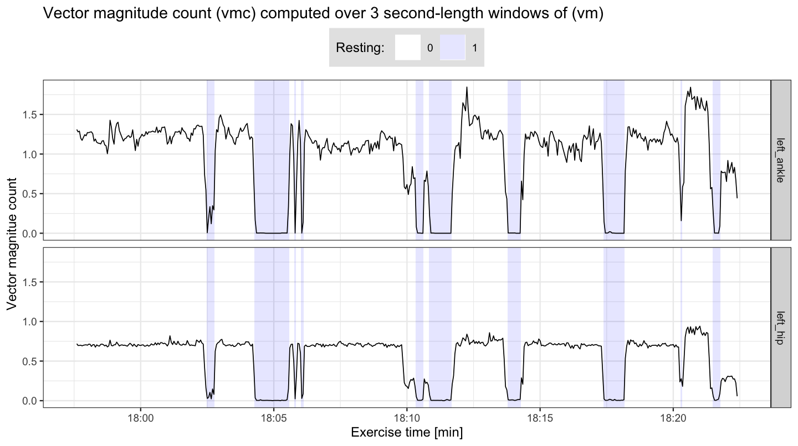
## Time percentage when (vmc) computed from left ankle is below 0.4
(vmc.low.frac <- mean(vmc.df.rest$resting))
#> [1] 0.186We can see that approximately \(19\)% of the time \((vmc)\) computed from left ankle data is below \(0.4\) value. Here, that part of data corresponds to standing with no walking/running legs movement involved. It is likely that the runner was i.e. waiting on the crossroad for a green light to cross. We use this arbitrarily selected threshold of \(0.4\) to partition data into time frames of resting (\((vmc)<0.4\); marked with light blue color) and non-resting (\((vmc)\geq 0.4\)).
Analogously, high values of \((vmc)\) correspond to high volumes of movement; in this experiment, at approx. 18:21 (6:21 PM) a short period of a fast run started, resulting in high values of \((vmc)\) for both left ankle and left hip sensors.
Walking strides segmentation
To segment strides from \((vm)\) time-series, we use stride accelerometry data templates. These templates are specific to a wearable sensor location (i.e. left ankle-specific template). We demonstrate two approaches:
Approach 1: Use stride templates derived from accelerometry data collected in a different experiment, with different participants. These templates are attached to the
adeptdatapackage asstride_templateobject; data used to derive them are also attached to theadeptdatapackage asacc_walking_IU(see?stride_template,?acc_walking_IUfor details).Approach 2: Derive stride templates semi-manually from
acc_runningdata set.
Segmentation with Approach 1: use existing stride templates
Left ankle
We use pre-computed stride_template {adeptdata} to build a template object – a list of left ankle-specific stride templates.
template <- list(stride_template$left_ankle[[2]][1, ],
stride_template$left_ankle[[2]][2, ])
par(mfrow = c(1,2), cex = 0.7)
plot(template[[1]], type = "l", xlab = "", ylab = "", main = "Left ankle: template 1")
plot(template[[2]], type = "l", xlab = "", ylab = "", main = "Left ankle: template 2")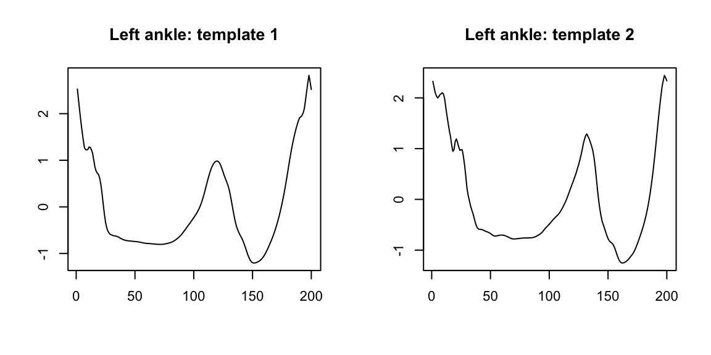
We use segmentPattern {adept} function to segment strides from \((vm)\) accelerometry time-series.
Explanation of function arguments used:
-
x- A time-series to segment pattern occurrences from (here: \((vm)\) accelerometry time-series). -
x.fs- Data sampling frequency, expressed in a number of observations per second. -
template– Pattern template(s). -
pattern.dur.seq- A grid of potential stride durations, expressed in seconds. -
similarity.measure- Statistic used to quantify similarity between accelerometry time-series and template. -
x.adept.ma.W- Length of smoothing window used in accelerometry time-series processing before computing siliarity between accelerometry time-series and templates, expressed in seconds. -
finetune- Procedure employed to fine-tune preliminarily identified beginnings and ends of a pattern in a accelerometry time-series. -
finetune.maxima.ma.W- Length of smoothing window used in"maxima"fine-tune procedure, expressed in seconds. -
finetune.maxima.nbh.W- Length of a local maxima search grid used in"maxima"fine-tune procedure, expressed in seconds. -
compute.template.idx- Whether or not to compute which of the (possibly multiple) templates best-matched accelerometry time-series.run.parallel- Whether or not to use parallel execution in the algorithm.
See ?segmentPattern for a detailed explanation of all parameters. See Introduction to adept package vignette for explanation of segmentPattern {adept} parameters with simulated data examples.
x.la <- acc_running$vm[acc_running$loc_id == "left_ankle"]
out1.la <- segmentPattern(
x = x.la,
x.fs = 100,
template = template,
pattern.dur.seq = seq(0.5, 1.8, length.out = 50),
similarity.measure = "cor",
x.adept.ma.W = 0.15,
finetune = "maxima",
finetune.maxima.ma.W = 0.05,
finetune.maxima.nbh.W = 0.2,
compute.template.idx = TRUE,
run.parallel = TRUE)head(out1.la)
#> tau_i T_i sim_i template_i
#> 1 18 57 0.6957134 1
#> 2 74 51 0.4782092 1
#> 3 142 115 0.7533280 1
#> 4 256 76 0.8841799 1
#> 5 371 81 0.9152038 1
#> 6 451 78 0.9075649 1The segmentation result is a data frame, where each row describes one identified pattern occurrence:
-
tau_i- index ofxwhere pattern starts, -
T_i- pattern duration, expressed inxvector length, -
sim_i- similarity between a pattern andx, -
template_i- index of a pattern template best matched to a pattern in the time-seriesx.
Left hip
We now segment strides from accelerometry data collected at left hip. We then compare the results with left ankle segmentation.
template <- list(stride_template$left_hip[[1]][1, ],
stride_template$left_hip[[2]][2, ])
par(mfrow = c(1,2), cex = 0.7)
plot(template[[1]], type = "l", xlab = "", ylab = "", main = "Left hip: template 1")
plot(template[[2]], type = "l", xlab = "", ylab = "", main = "Left hip: template 2")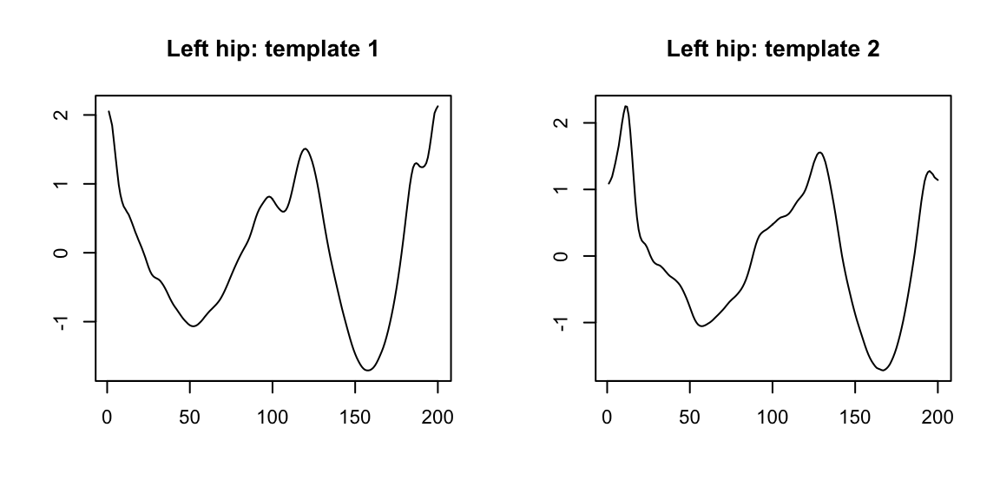
template <- list(stride_template$left_hip[[1]][1, ],
stride_template$left_hip[[2]][2, ])
x.lh <- acc_running$vm[acc_running$loc_id == "left_hip"]
out1.lh <- segmentPattern(x = x.lh,
x.fs = 100,
template = template,
pattern.dur.seq = seq(0.5, 1.8, length.out = 50),
similarity.measure = "cor",
x.adept.ma.W = 0.05,
finetune = "maxima",
finetune.maxima.ma.W = 0.15,
finetune.maxima.nbh.W = 0.2,
compute.template.idx = TRUE,
run.parallel = TRUE)Results: estimated stride duration time
We estimate stride duration, expressed in seconds, as T_i divided by data sampling frequency (here: \(100\)). Similarly, we estimate stride start, expressed in seconds after run-recording began, as tau_i divided by data sampling frequency; to get estimated stride start given in minutes after run-recording began, we additionally divide by \(60\).
We use previously derived information of resting (\((vmc)<0.4\)) and non-resting (\((vmc)\geq 0.4\)) to filter out segmented data parts which likely do not correspond to running/walking. We then plot the estimated stride duration against estimated stride start. We use different background shade to mark the derived resting/non-resting labels for subsequent \(3\)-minute windows.
## Merge results from two sensor locations, add resting/non-resting info
plt.df.la <-
out1.la %>%
merge(vmc.df.rest) %>%
filter(tau_i >= vmc_tau_i, tau_i < vmc_tau_i + 3 * 100, resting == 0) %>%
mutate(location = "left_ankle")
plt.df.lh <-
out1.lh %>%
merge(vmc.df.rest) %>%
filter(tau_i >= vmc_tau_i, tau_i < vmc_tau_i + 3 * 100, resting == 0) %>%
mutate(location = "left_hip")
plt.df <- rbind(plt.df.la, plt.df.lh)
ggplot(plt.df,
aes(x = tau_i / (100 * 60) , y = T_i / 100)) +
geom_tile(data = vmc.df.rest,
aes(x = vmc_tau_i / (100 * 60), y = 1, fill = factor(resting)),
height = Inf, alpha = 0.1, inherit.aes = FALSE) +
geom_point(alpha = 0.2) +
facet_grid(location ~ .) +
theme_bw(base_size = 10) +
labs(x = "Exercise time [min]", y = "Estimated stride duration time [s]",
fill = "Resting: ") +
theme(legend.position = "top") +
scale_fill_manual(values = c("white", "blue")) +
theme(legend.position = "top",
legend.background = element_rect(fill = "grey90")) +
scale_y_continuous(limits = c(0.5, 1.8))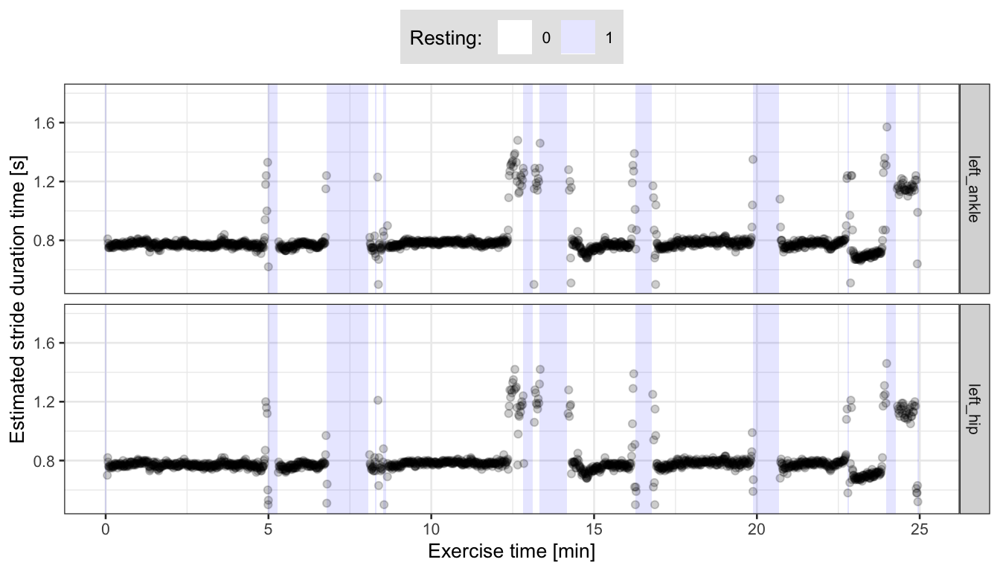
We can see that the estimated stride duration (y-axis) is consistent between data collected at the left ankle and left hip. Some differences we observe may partially result from different smoothing parameters used in segmentation fine-tune procedure; left ankle data was smoothed less (
finetune.maxima.ma.W = 0.05) than left hip data (finetune.maxima.ma.W = 0.15).We may suppose that around the resting periods (light blue background), strides of both relatively long and short duration may correspond to the runner walking (making long slow steps, or very short steps). They can be a mislabeled resting data, too.
Results: subject-specific stride pattern (left ankle)
We now use the estimated stride start (tau_i) and stride duration (T_i) to retrieve accelerometry \((vm)\) time-series segments corresponding to segmented strides. We further align them in phase and scale to better observe stride patterns.
## For data frame #1 (raw vm segments)
stride.acc.vec.la <- numeric()
stride.tau_i.vec.la <- numeric()
stride.idx.vec.la <- numeric()
## For data frame #2 (scaled vm segments)
stride_S.acc.vec.la <- numeric()
stride_S.tau_i.vec.la <- numeric()
stride_S.phase.vec.la <- numeric()
for (i in 1:nrow(plt.df.la)){
out.i <- plt.df.la[i, ]
x.la.i <- x.la[out.i$tau_i : (out.i$tau_i + out.i$T_i - 1)]
x.la.i.len <- length(x.la.i)
if (var(x.la.i) < 1e-3) next
## For data frame #1
stride.acc.vec.la <- c(stride.acc.vec.la, x.la.i)
stride.tau_i.vec.la <- c(stride.tau_i.vec.la, rep(out.i$tau_i, x.la.i.len))
stride.idx.vec.la <- c(stride.idx.vec.la, 1:x.la.i.len)
## For data frame #2
x.la.i_S <- approx(x = seq(0, 1, length.out = length(x.la.i)),
y = x.la.i,
xout = seq(0, 1, length.out = 200))$y
x.la.i_S <- as.numeric(scale(x.la.i_S))
stride_S.acc.vec.la <- c(stride_S.acc.vec.la, x.la.i_S)
stride_S.tau_i.vec.la <- c(stride_S.tau_i.vec.la, rep(out.i$tau_i, 200))
stride_S.phase.vec.la <- c(stride_S.phase.vec.la, seq(0, 1, length.out = 200))
}
## data frame #1
stride.df.la <- data.frame(acc = stride.acc.vec.la,
tau_i = stride.tau_i.vec.la,
idx = stride.idx.vec.la)
## data frame #2
stride_S.df.la <- data.frame(acc = stride_S.acc.vec.la,
tau_i = stride_S.tau_i.vec.la,
phase = stride_S.phase.vec.la)## Plot segmented walking strides
plt1 <-
stride.df.la %>%
ggplot(aes(x = idx/100, y = acc, group = tau_i)) +
geom_line(alpha = 0.1) +
theme_bw(base_size = 8) +
labs(x = "Stride pattern duration [s]", y = "Vector magnitude [g]",
title = "Segmented walking strides")
plt2 <-
stride_S.df.la %>%
ggplot(aes(x = phase, y = acc, group = tau_i)) +
geom_line(alpha = 0.1) +
theme_bw(base_size = 8) +
labs(x = "Stride pattern phase", y = "Vector magnitude (scaled) [g]",
title = "Segmented walking strides, aligned and scaled")
grid.arrange(plt1, plt2, nrow = 1)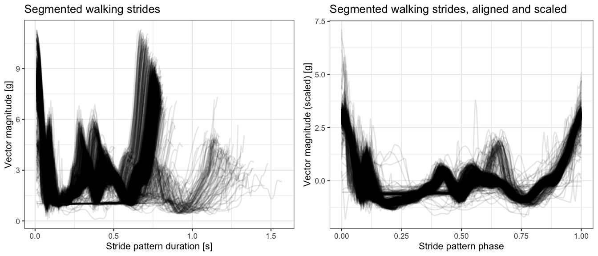
- Based on the plot of aligned and scaled strides (right plot above), it seems there are at least two distinct stride patterns pronounced in data - one with a “spike with a dip” in a middle of a stride pattern phase, and another, less frequent (fewer lines on the plot), with a spike at approx. \(2/3\) of a stride pattern phase.
Correlation clustering of segmented walking strides
We can further use correlation clustering to group segmented walking strides.
## Compute strides distance martrix
stride_S.dfdc.la <- dcast(stride_S.df.la, phase ~ tau_i, value.var = "acc")[, -1]
data.mat.tau_i <- as.numeric(colnames(stride_S.dfdc.la))
data.mat <- as.matrix(stride_S.dfdc.la)
D.mat <- dist(cor(data.mat))
## Get cluster medoids
cluster.k <- 2
medoids.idx <- round(seq(1, ncol(stride_S.dfdc.la), length.out = cluster.k + 2))
medoids.idx <- medoids.idx[-c(1, medoids.idx + 2)]
## Cluster strides
set.seed(1)
pam.out <- cluster::pam(D.mat, cluster.k, diss = TRUE, medoids = medoids.idx)
table(pam.out$clustering)
#>
#> 1 2
#> 1419 120
## Put clustering results into data frame
data.df <- as.data.frame(t(data.mat))
colnames(data.df) <- seq(0, to = 1, length.out = 200)
data.df$tau_i <- data.mat.tau_i
data.df$cluster <- pam.out$clustering
data.dfm <- melt(data.df, id.vars = c("tau_i", "cluster"))
data.dfm$variable <- as.numeric(as.character(data.dfm$variable))
data.dfm$cluster <- paste0("cluster ", data.dfm$cluster)data.dfm.agg <-
data.dfm %>%
group_by(variable, cluster) %>%
summarise(value = mean(value))
ggplot(data.dfm, aes(x = variable, y = value, group = tau_i)) +
geom_line(alpha = 0.2) +
geom_line(data = data.dfm.agg, aes(x = variable, y = value, group = 1),
color = "red", size = 1, inherit.aes = FALSE) +
facet_grid(cluster ~ .) +
theme_bw(base_size = 9) +
labs(x = "Stride pattern phase", y = "Vector magnitude (scaled) [g]",
title = "Segmented walking strides, aligned, scaled, clustered\nRed line: point-wise mean") 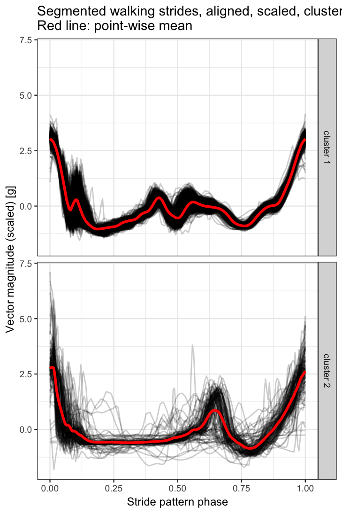
We further plot the estimated stride duration time over the course of the run-trial exercise. We mark the pattern cluster assignment with color.
data.dfm %>%
select(tau_i, cluster) %>%
distinct() %>%
left_join(plt.df.la, by = "tau_i") %>%
ggplot(aes(x = tau_i / (100 * 60) , y = T_i / 100, color = cluster)) +
geom_tile(data = vmc.df.rest,
aes(x = vmc_tau_i / (100 * 60), y = 1, fill = factor(resting)),
height = Inf, alpha = 0.1, inherit.aes = FALSE) +
geom_point(alpha = 0.4) +
theme_bw(base_size = 9) +
labs(x = "Exercise time [min]", y = "Estimated stride duration time [s]",
color = "Stride assignment: ",
fill = "Resting: ") +
scale_fill_manual(values = c("white", "blue")) +
theme(legend.position = "top",
legend.background = element_rect(fill = "grey90")) +
scale_y_continuous(limits = c(0.5, 1.8))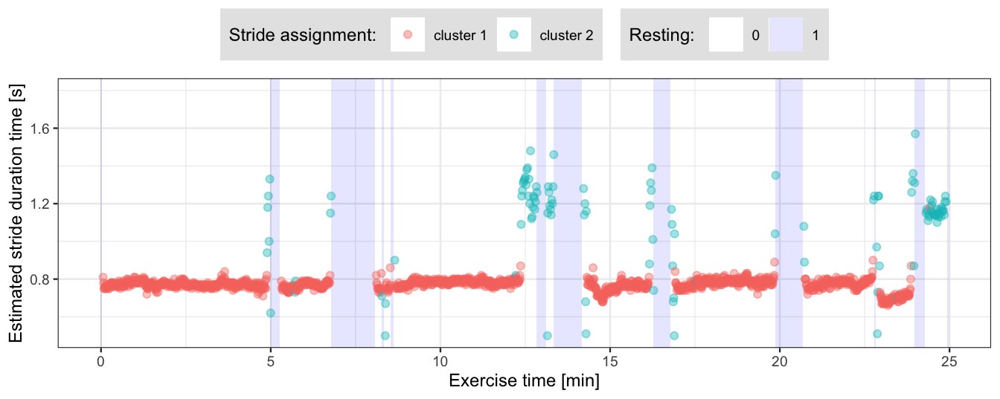
- From the plot above we can note that pattern cluster assignment corresponds to performed activity: strides marked with red likely correspond to running, strides marked with green - walking.
Segmentation with Approach 2: derive stride templates semi-manually
We now demonstrate a semi-manual way of deriving stride patterns from scratch.
Smooth accelerometry \((vm)\) time-series.
Select a short segment, or multiple segments, from the smoothed \((vm)\) time-series.
Within each selected \((vm)\) segment, use a function to automatically identify all local maxima.
Within each selected \((vm)\) segment, identify a subset of local maxima that corresponds to stride beginnings and ends via visual inspection (the “manual” part).
For each selected \((vm)\) segment, cut it at the points of identified local maxima subset from step 3., interpolate obtained parts to a common vector length, align, standardize to have mean 0 and variance 1, and compute their point-wise average. Standardize the average to have mean 0 and variance 1. For each \((vm)\) segment, the resulted point-wise average is a one newly created template.
Here, we select two \((vm)\) fragments in step 1., each of 6 seconds length, in a way that they correspond to a different pace of running/walking. We apply the above procedure separately for data collected at the left hip and left ankle. That way, for each sensor location, we arrive at two distinct stride templates that we further use in segmentation.
## Function to compute local maxima
## source: https://stackoverflow.com/questions/6836409/finding-local-maxima-and-minima
localMaxima <- function(x) {
y <- diff(c(-.Machine$integer.max, x)) > 0L
y <- cumsum(rle(y)$lengths)
y <- y[seq.int(1L, length(y), 2L)]
if (x[[1]] == x[[2]]) {
y <- y[-1]
}
y
}
## Function which cut x vector at indices given by x.cut.idx,
## approximate cut parts into common length and average
## parts point-wise into one vector
cut.and.avg <- function(x, x.cut.idx){
x.cut.idx.l <- length(x.cut.idx)
mat.out <- matrix(NA, nrow = x.cut.idx.l-1, ncol = 200)
for (i in 1:(length(x.cut.idx)-1)){
xp <- x[x.cut.idx[i]:x.cut.idx[i+1]]
xpa <- approx(seq(0, 1, length.out = length(xp)), xp, seq(0, 1, length.out = 200))$y
mat.out[i, ] <- as.numeric(scale(xpa, scale = TRUE, center = TRUE))
}
out <- apply(mat.out, 2, mean)
as.numeric(scale(out, scale = TRUE, center = TRUE))
}
## Smooth the accelerometry vm time-series
acc_running$vm_smoothed1 <- windowSmooth(x = acc_running$vm, x.fs = 100, W = 0.05)
## Make subset of data which has data parts of different speed of running
acc_running_sub2 <-
acc_running %>%
filter((date_time >= t2 & date_time < t2 + as.period(6, "seconds")) |
(date_time >= t3 & date_time < t3 + as.period(6, "seconds"))) %>%
mutate(dt_floor = floor_date(date_time, unit = "minutes"))
## Vector of signatures for data parts of different speed of running
dt_floor.unique <- unique(acc_running_sub2$dt_floor)Deriving stride patterns in a semi-manual way: left ankle
## Left ankle-specific subset of data
sub.la <- acc_running_sub2[acc_running_sub2$loc_id == "left_ankle", ]
par(mfrow = c(1,3), cex = 0.6)
## Left ankle: template 1
x1 <- sub.la[sub.la$dt_floor == dt_floor.unique[1], "vm_smoothed1"]
x1.locMax <- localMaxima(x1)
plot(1:length(x1), x1, type = "l", main = "(vm) local maxima", xlab = "Index", ylab = "")
abline(v = x1.locMax, col = "red")
plot(1:length(x1), x1, type = "l", main = "(vm) local maxima subset", xlab = "Index", ylab = "")
abline(v = x1.locMax[c(3, 6, 9, 13, 16, 19, 23, 26, 29)], col = "red")
template.la.x1 <- cut.and.avg(x1, x1.locMax[c(3, 6, 9, 13, 16, 19, 23, 26, 29)])
plot(1:length(template.la.x1), template.la.x1, type = "l",
col = "red", main = "left ankle: template 1", xlab = "Index", ylab = "")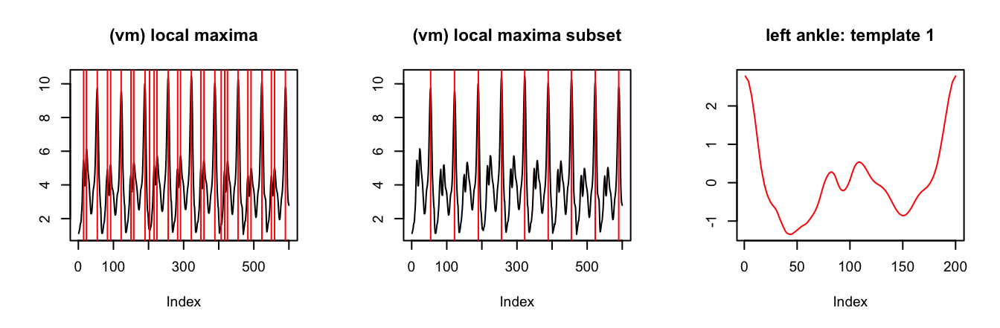
## Left ankle: template 2
x2 <- sub.la[sub.la$dt_floor == dt_floor.unique[2], "vm_smoothed1"]
x2.locMax <- localMaxima(x2)
plot(1:length(x2), x2, type = "l", main = "(vm) local maxima", xlab = "Index", ylab = "")
abline(v = x2.locMax, col = "red")
plot(1:length(x2), x2, type = "l", main = "(vm) local maxima subset", xlab = "Index", ylab = "")
abline(v = x2.locMax[c(8, 18, 26, 37, 44)], col = "red")
template.la.x2 <- cut.and.avg(x2, x2.locMax[c(8, 18, 26, 37, 44)])
plot(1:length(template.la.x2), template.la.x2, type = "l",
col = "red", main = "left ankle: template 2", xlab = "Index", ylab = "")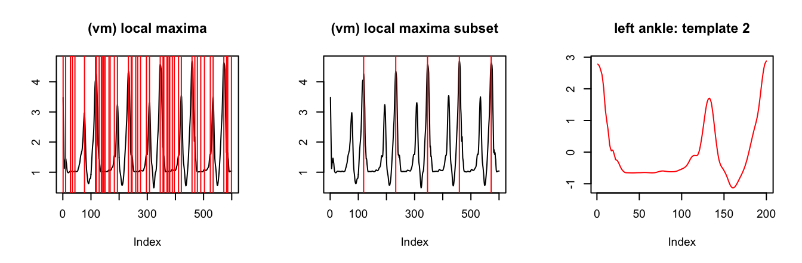
Deriving stride patterns in a semi-manual way: left hip
## Left hip-specific subset of data
sub.lh <- acc_running_sub2[acc_running_sub2$loc_id == "left_hip", ]
par(mfrow = c(1,3), cex = 0.6)
## Left hip: template 1
x1 <- sub.lh[sub.lh$dt_floor == dt_floor.unique[1], "vm_smoothed1"]
x1.locMax <- localMaxima(x1)
plot(1:length(x1), x1, type = "l", main = "(vm) local maxima", xlab = "Index", ylab = "")
abline(v = x1.locMax, col = "red")
plot(1:length(x1), x1, type = "l", main = "(vm) local maxima subset", xlab = "Index", ylab = "")
abline(v = x1.locMax[c(3, 10, 17, 24, 30, 37, 43, 49, 56)], col = "red")
template.lh.x1 <- cut.and.avg(x1, x1.locMax[c(3, 10, 17, 24, 30, 37, 43, 49, 56)])
plot(1:length(template.lh.x1), template.lh.x1, type = "l",
col = "red", main = "left ankle: template 1", xlab = "Index", ylab = "")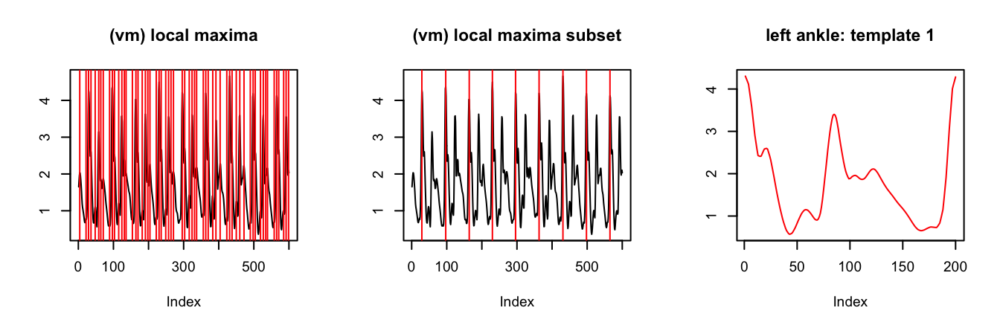
## Left hip: template 2
x2 <- sub.lh[sub.lh$dt_floor == dt_floor.unique[2], "vm_smoothed1"]
x2.locMax <- localMaxima(x2)
plot(1:length(x2), x2, type = "l", main = "(vm) local maxima", xlab = "Index", ylab = "")
abline(v = x2.locMax, col = "red")
plot(1:length(x2), x2, type = "l", main = "(vm) local maxima subset", xlab = "Index", ylab = "")
abline(v = x2.locMax[c(5, 13, 19, 24, 31)], col = "red")
template.lh.x2 <- cut.and.avg(x2, x2.locMax[c(5, 13, 19, 24, 31)])
plot(1:length(template.lh.x2), template.lh.x2, type = "l",
col = "red", main = "left ankle: template 2", xlab = "Index", ylab = "")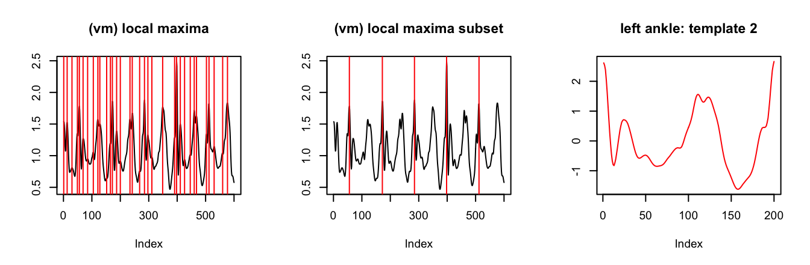
Segmentation
out2.la <- segmentPattern(x = x.la,
x.fs = 100,
template = template.la,
pattern.dur.seq = seq(0.5, 1.8, length.out = 50),
similarity.measure = "cor",
x.adept.ma.W = 0.15,
finetune = "maxima",
finetune.maxima.ma.W = 0.05,
finetune.maxima.nbh.W = 0.2,
compute.template.idx = TRUE,
run.parallel = TRUE)
out2.lh <- segmentPattern(x = x.lh,
x.fs = 100,
template = template.lh,
pattern.dur.seq = seq(0.5, 1.8, length.out = 50),
similarity.measure = "cor",
x.adept.ma.W = 0.05,
finetune = "maxima",
finetune.maxima.ma.W = 0.15,
finetune.maxima.nbh.W = 0.2,
compute.template.idx = TRUE,
run.parallel = TRUE)Results: estimated stride duration time
## Merge results from two sensor locations, add resting/non-resting info
plt.df.la.2 <-
out2.la %>%
merge(vmc.df.rest) %>%
filter(tau_i >= vmc_tau_i, tau_i < vmc_tau_i + 3 * 100, resting == 0) %>%
mutate(location = "left_ankle")
plt.df.lh.2 <-
out2.lh %>%
merge(vmc.df.rest) %>%
filter(tau_i >= vmc_tau_i, tau_i < vmc_tau_i + 3 * 100, resting == 0) %>%
mutate(location = "left_hip")
plt.df <- rbind(plt.df.la.2, plt.df.lh.2)
ggplot(plt.df,
aes(x = tau_i / (100 * 60) , y = T_i / 100)) +
geom_tile(data = vmc.df.rest,
aes(x = vmc_tau_i / (100 * 60), y = 1, fill = factor(resting)),
height = Inf, alpha = 0.1, inherit.aes = FALSE) +
geom_point(alpha = 0.2) +
facet_grid(location ~ .) +
theme_bw(base_size = 10) +
labs(x = "Exercise time [min]", y = "Estimated stride duration time [s]",
fill = "Resting: ") +
theme(legend.position = "top") +
scale_fill_manual(values = c("white", "blue")) +
theme(legend.position = "top",
legend.background = element_rect(fill = "grey90")) +
scale_y_continuous(limits = c(0.5, 1.8))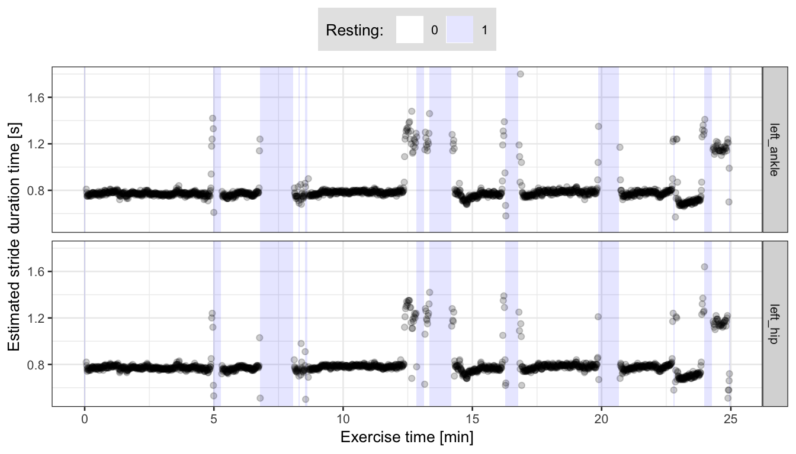
- From the plot above we see that the estimated stride duration times are fairly consistent between the two sensor locations, and also consistent with the estimates we obtained based on external, pre-computed stride templates.
Karas, M., Straczkiewicz, M., Fadel, W., Harezlak, J., Crainiceanu, C., Urbanek, J.K. Adaptive empirical pattern transformation (ADEPT) with application to walking stride segmentation, Submitted to Biostatistics, 2018.↩
Karas, M., Crainiceanu, C., Urbanek, J.: Introduction to adept package vignette to the ‘adept’ package.↩
Karas, M., Bai, J., Straczkiewicz, M., Harezlak, J., Glynn, N W., Harris, T., Zipunnikov, V., Crainiceanu, C., Urbanek, J.K. Accelerometry data in health research: challenges and opportunities. Review and examples, Statistics in Biosciences, 2018. (link).↩